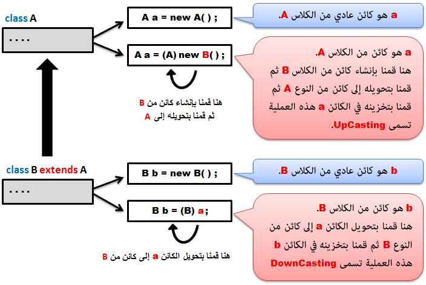
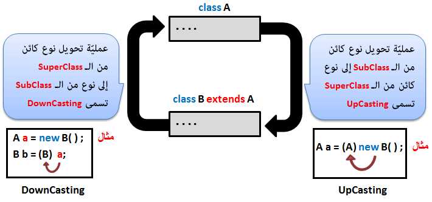
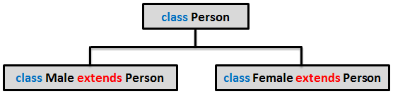

Javaتحويل الأنواع في جافا
مفهوم الـ Type Casting
Type Casting تعني تحويل نوع الكائن أو المتغير إلى نوع شبيه له. هذا التحويل يمكن تحقيقه فقط بين Superclass و Subclass.
بالنسبة لتحويل أنواع الكائنات. يوجد أسلوبين للتحويل و هما: Upcasting و Downcasting.
التحويل في كلا الحالتين لا يقصد منه تحويل نوع الكائن الأصلي, بل تخصيص الطريقة التي سيتعامل فيها المترجم مع الكائن.
إذا قمت بإنشاء كلاس إسمه A, ثم قمت بإنشاء كلاس آخر إسمه B يرث منه. و بعدها فعلت DownCast لكائن من A على أنه B, هنا الكائن سيبقى كائن من A و لكن المترجم سيتعامل معه ككائن من B, و سيخفي خصائص الكلاس A فيه. سترى ذلك لاحقاً من خلال الأمثلة.
طريقة تحويل أنواع الكائنات
في الصورة التالية سترى كيف نفعل عمليات الـ Upcasting و الـ Downcasting.

مصطلحات تقنية
تذكر دائماً أن الـ Upcasting هي التحويل من الأسفل إلى الأعلى, و الـ Downcasting هي التحويل من الأعلى إلى الأسفل كما في الصورة التالية:

Automatic Upcasting and Manual Upcasting
بالنسبة للـ Upcasting, يمكنك عدم تحديد نوع الـ Superclass المستخدم في التحويل لأن المترجم يفعل ذلك بشكل تلقائي.
مثال
•الطريقتين المذكورتين هنا مسموحتان في جافا و يعطيانك نفس النتيجة.
// Manual Upcasting <-- الطريقة الأولى
A a = (A) new B();
// Automatic Upcasting <-- الطريقة الثانية
A a = new B();
الطريقة الأولى تسمى Manual Upcasting لأننا قمنا بذكر النوع الذي سيتم تحويل الكائن إليه.
الطريقة الثانية تسمى Automatic Upcasting لأننا لم نقم بذكر النوع الذي سيتم تحويل الكائن إليه, و بالتالي سيقوم المترجم بذلك بشكل تلقائي.
في الأمثلة التالية سنستخدم أسلوب الـ Automatic Upcasting و ليس الـ Manual Upcasting.
نقطة مهمة حول الـ Downcasting
بالنسبة للـ Downcasting, يجب تحديد نوع الـ Subclass المستخدم في التحويل لأن المترجم لا يفعل ذلك بشكل تلقائي, و السبب في ذلك أن التحويل من الأعلى إلى الأسفل بشكل عام يعني أن الكائن الذي تم إنشائه من الـ Superclass سيخسر بعض بياناته عند تحويله إلى كائن من الـ Subclass.
إذاً لا يمكن أن تفعل DownCast لكائن إلا إذا كنت قد سبق و فعلت له UpCast.
المثال الأول
A a = new B();
B b = a; // Incompatible Type: A cannot be converted to B <-- [ سيظهر لك تحذير ]
•إذاً هنا كان يجب تحويل نوع الكائن a حتى تحل المشكلة.
A a = new B();
B b = (B) a; // هنا حللنا المشكلة و أصبح الكود سليم لا يحتوي على أي خطأ
المثال الثاني
B b = new A(); // Incompatible Type: A cannot be converted to B <-- [ سيظهر لك تحذير ]
•إذاً هنا كان يجب تحويل نوع الكائن a حتى تحل المشكلة.
B b = (B) new A(); // هنا حللنا المشكلة و أصبح الكود سليم لا يحتوي على أي خطأ
أمثلة شاملة
سنقوم بتعريف كلاس إسمه Person عبارة عن شخص, بعدها سنقوم بتعريف كلاس إسمه Male و كلاس إسمه Female, و الإثنان يرثان من الكلاس Person. أي يجب ربط الكلاسات كما في الصورة التالية:

الآن سنقوم ببناء جميع هذه الكلاسات, ثم سنقوم ببناء الكلاس Main لتجربة مفهوم الـ Type Casting.
إنتبه: سنستخدم الدالة getClass() لمعرفة الكلاس الأصلي للكائنات.
المثال الأول
Person.java
public class Person {
}
Male.java
public class Male extends Person {
}
Female.java
public class Female extends Person {
}
Main.java
public class Main {
public static void main(String[] args) {
Female hala = new Female(); // hala إسمه Female هنا قمنا بتعريف كائن عادي من
Male mhamad = new Male(); // mhamad إسمه Male هنا قمنا بتعريف كائن عادي من
// Upcasting هنا سنجري عملية تحويل من النوع
Person ziad = new Male(); // Male ثم حددنا أنه من النوع Person هنا قمنا بتعريف كائن من
// Downcasting هنا سنجري عملية تحويل من النوع
Female rola = new Female(); // rola إسمه Female هنا قمنا بتعريف كائن عادي من
Person p = rola; // Upcasting هذه العملية تسمى .rola ثم حددنا أنه يشير إلى الكائن Person هنا قمنا بتعريف كائن من
Female rana = (Female) p; // Downcasting هذه العملية تسمى .rola و الذي يشير في الأصل للكائن p للكائن DownCast هنا فعلنا
// هنا سنقوم بطباعة إسم الكلاس المشتق منه كل كائن قمنا بإنشائه
System.out.println("1) "+ hala.getClass()); // Female كائن من الكلاس hala هنا ستخبرنا أن
System.out.println("2) "+ mhamad.getClass()); // male كائن من الكلاس mhamad هنا ستخبرنا أن
System.out.println("3) "+ ziad.getClass()); // male كائن من الكلاس ziad هنا ستخبرنا أن
System.out.println("4) "+ rola.getClass()); // female كائن من الكلاس rola هنا ستخبرنا أن
System.out.println("5) "+ p.getClass()); // Female و الذي نوعه rola لأنه أصلاً يشير إلى الكائن Female كائن من الكلاس p هنا ستخبرنا أن
System.out.println("6) "+ rana.getClass()); // Female كائن من الكلاس rana هنا ستخبرنا أن
}
}
•سنحصل على النتيجة التالية عند التشغيل.
1) class typecasting.Female
2) class typecasting.Male
3) class typecasting.Male
4) class typecasting.Female
5) class typecasting.Female
6) class typecasting.Female
حسناً, لقد فهمت الآن طريقة التحويل لكنك حتماً مرتبك بشأن نتيجة التشغيل, و لعلك تتساءل إذا كانت الكائنات rola, و p و rana كلها تشير إلى نفس الكائن؟!".
سنعلمك حيلة تجعلك تتأكد إذا كان يوجد أكثر من إسم يشير إلى نفس الكائن.
كل ما عليك أن تفعله هو طباعة عناوين الخانات التي تم تخزين الكائنات فيها في الذاكرة.
سنعيد نفس المثال السابق مع عرض عناوين الخانات التي تم تخزين الكائنات فيها في الذاكرة, و نلفت الإنتباه أن هذه النتيجة تتغير من حيث أسماء العناوين التي ستظهر كلما قمت بتشغيل البرنامج (ذاكرة الحاسوب تعمل هكذا), لكن الفكرة هنا أن المتغيرات التي تشير إلى نفس الكائن ستشير إليه نفسه في الذاكرة (أي ستشير إلى نفس العنوان في الذاكرة) و هذا ما يؤكد لنا أنهم يشيرون إليه.
المثال الثاني
Main.java
public class Main {
public static void main(String[] args) {
Female hala = new Female();
Male mhamad = new Male();
Person ziad = new Male();
Female rola = new Female();
Person p = rola;
Female rana = (Female) p;
// هنا سنقوم بطباعة عنوان كل كائن تم إنشائه في الذاكرة
System.out.println("1) "+ hala.toString()); // في الذاكرة hala هذا العنوان الذي يخزن الكائن
System.out.println("2) "+ mhamad.toString()); // في الذاكرة mhamad هذا العنوان الذي يخزن الكائن
System.out.println("3) "+ ziad.toString()); // في الذاكرة ziad هذا العنوان الذي يخزن الكائن
System.out.println("4) "+ rola.toString()); // في الذاكرة rola هذا العنوان الذي يخزن الكائن
System.out.println("5) "+ p.toString()); // في الذاكرة p هذا العنوان الذي يخزن الكائن
System.out.println("6) "+ rana.toString()); // في الذاكرة rana هذا العنوان الذي يخزن الكائن
}
}
•سنحصل على نتيجة تشبه النتيجة التالية عند التشغيل لأن الأماكن المحجوزة في الذاكرة لتخزين بيانات البرامج تتبدل كما قلنا سابقاً.
•قمنا بتعليم العناوين المشتركة باللون الأصفر.
1) typecasting.Female@60ec2ea8
2) typecasting.Male@31eb494e
3) typecasting.Male@4e19b97c
4) typecasting.Female@7ae0a3f2
5) typecasting.Female@7ae0a3f2
6) typecasting.Female@7ae0a3f2
•إذاً الكائنات الثلاثة rola, p و rana يشيرون فعلاً إلى نفس الكائن. و الكائن هنا هو كائن من الكلاس Female.
الفكرة الأخيرة التي عليك التأكد منها هي أنه عندما نقول أن الكائن نوعه كذا و لكنه بالتحديد من النوع كذا, فإن النوع الذي حددته له هو النوع الذي سيمثل الكائن.
مثال
Person ziad = new Male();
هنا سيعتبر المترجم أن الكائن ziad هو كائن من Male و ليس من Person.
و بالتالي سيحتوي الكائن ziad على نسخة من الأشياء الموجودة في Male و ليس الأشياء الموجودة في Person.
سنعيد نفس المثال السابق لكننا سنضيف دالة إسمها print() في الكلاس Person و سنفعل لها Override في الكلاسَين Male و Female.
المثال الثالث
Person.java
public class Person {
public void print() {
System.out.println("I am a Person");
}
}
Male.java
public class Male extends Person {
@Override
public void print() {
System.out.println("I am a Person and i'm a Male too.");
}
}
Female.java
public class Female extends Person {
@Override
public void print() {
System.out.println("I am a Person and i'm a Female too.");
}
}
Main.java
public class Main {
public static void main(String[] args) {
Female hala = new Female(); // Female سيملك نسخة من أشياء الكلاس hala الكائن
Male mhamad = new Male(); // Male سيملك نسخة من أشياء الكلاس hala الكائن
Person ziad = new Male(); // Male سيملك نسخة من أشياء الكلاس ziad الكائن
Female rola = new Female(); // Female سيملك نسخة من أشياء الكلاس rola الكائن
Person p = rola; // Female و بالتالي نسخة من أشياء الكلاس rola سيملك نسخة من أشياء الكائن p الكائن
Female rana = (Female) p; // Female و الذي يعتبر في الأصل نسخة من p سيملك نسخة من أشياء الكائن rana الكائن
hala.print(); // Female الموجودة في الكلاس print() هنا سيتم إستدعاء الدالة
mhamad.print(); // Male الموجودة في الكلاس print() هنا سيتم إستدعاء الدالة
ziad.print(); // Male الموجودة في الكلاس print() هنا سيتم إستدعاء الدالة
rola.print(); // Female الموجودة في الكلاس print() هنا سيتم إستدعاء الدالة
p.print(); // Female الموجودة في الكلاس print() هنا سيتم إستدعاء الدالة
rana.print(); // Female الموجودة في الكلاس print() هنا سيتم إستدعاء الدالة
}
}
•سنحصل على النتيجة التالية عند التشغيل.
I am a Person and i'm a Female too.
I am a Person and i'm a Male too.
I am a Person and i'm a Male too.
I am a Person and i'm a Female too.
I am a Person and i'm a Female too.
I am a Person and i'm a Female too.
تحويل أنواع البيانات البدائية
بالنسبة لأنواع البيانات البدائية (int, long, float, double, char) يمكنك أن تفعل لهم Cast عند الحاجة بكل سهولة.
مثال
Main.java
public class Main {
public static void main(String[] args) {
double a = 10.55;
// b و تخزينها في المتغير int إلى النوع double من النوع a هنا قمنا بتحويل نوع قيمة المتغير
int b = (int)a;
// أصلاً يقبل أعداد صحيحة double لأن النوع c مباشرةً في المتغير b هنا قمنا بتخزين قيمة المتغير
double c = b;
System.out.println("a = " + a);
System.out.println("b = " + b);
System.out.println("c = " + c);
}
}
•سنحصل على النتيجة التالية عند التشغيل.
a = 10.55
b = 10
c = 10.0
إنتبه جيداً أثناء التحويل لأنك كما شاهدت في المثال السابق أنك قد تخسر بعض البيانات عند التحويل.
أخطاء محتملة قد تحدث عند التحويل
إذا لم تقم بتحويل الكائنات بطريقة صحيحة, سيؤدي ذلك إلى ظهور أخطاء في الكود, قمنا بتقسيمها إلى ثلاثة إحتمالات:
وضعنا هنا أمثلة حول أنواع الأخطاء التي قد تحدث عند تحويل أنواع الكائنات.
شاهد الأمثلة »

 محرر الويب
محرر الويب نظام الألوان
نظام الألوان محول الوحدات
محول الوحدات محلل عناوين الشبكات
محلل عناوين الشبكات